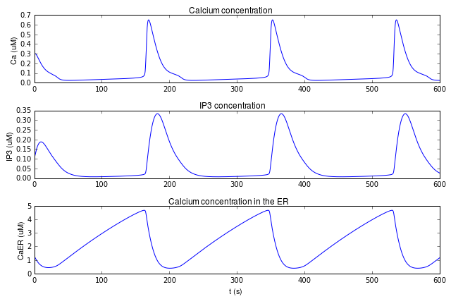

This is the readme for the model for the papers: 1. Lavrentovich M, Hemkin S (2008) A mathematical model of spontaneous calcium(II) oscillations in astrocytes. J Theor Biol 251:553-60 doi: 10.1016/j.jtbi.2007.12.011 see also Lavrentovich M, Hemkin S (2009) Corrigendum to “A mathematical model of spontaneous calcium(II) oscillations in astrocytes” [J. Theor. Biol. 251 (2008) 553–560] Journal of Theoretical Biology 260(2):332 doi: 10.1016/j.jtbi.2009.06.005 2. Manninen T, Havela R, Linne ML (2017) Reproducibility and comparability of computational models for astrocyte calcium excitability Front. Neuroinform. This jupyter notebook was contributed by Dr T Manninen. To run, start jupyter notebook on your system and load the ipython notebook. This code reproduces (the top trace in below) the trace in Figure 3 in the 2008 paper: 